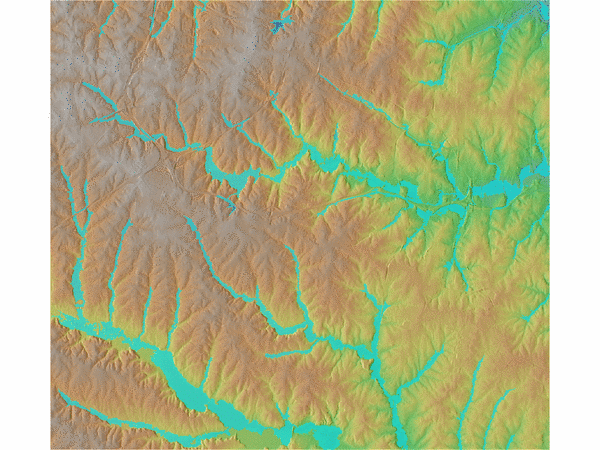
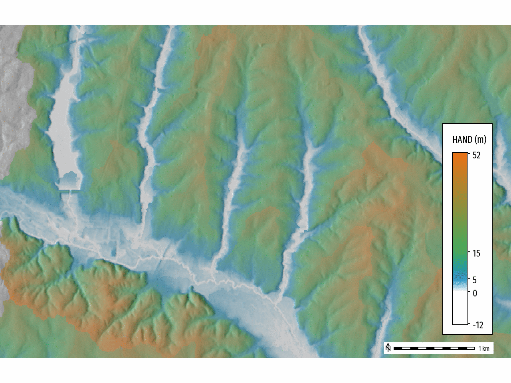
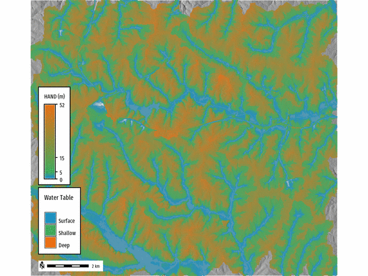

DESCRIPTION
r.hand - Height Above Nearest Drainage (HAND) is a terrain-based model that computes the height of the
terrain above the nearest stream using a digital elevation model (DEM) (Nobre et al., 2011).
The HAND method is widely used for hydrological analysis, particularly for estimating flood inundation extents
based on user-defined water levels.
The tool generates flood inundation extent maps by applying the HAND method to a DEM. Users can optionally provide
streams and flow direction raster maps to improve processing efficiency and accuracy. The tool will return an
inundation raster map or times series (STRDS) of inundation raster maps based on user define water levels.
Additionally, the HAND raster map can be returned as an output if desired by setting the difference parameter.
EXAMPLES
Calculate an inundation raster map from a DEM raster map:
r.hand elevation=elevation hand=hand depth=2 inundation_raster=inundation

Figure: Inundation event 2 m.
Calculate series of inundation raster maps from a DEM raster map:
r.hand -t elevation=elevation hand=hand inundation_strds=inundation_strds \
start_water_level=0 end_water_level=5 water_level_step=1
Output HAND raster in addition to inundation raster(s):
r.hand elevation=elevation hand=hand depth=4 threshold=5000 \
inundation_raster=inundation
- 0 > HAND < 5 m = Surface Water Table
- 5 > HAND < 15 m = Shallow Water Table
- HAND > 15 m = Deep Water Table

Figure: Height Above Nearest Drainage (HAND)
# Reclassify HAND raster into categories
r.reclass input=hand output=hand_reclass rules=- <$lt EOF
-30000 thru 0 = NULL
1 thru 5 = 1 Surface
5 thru 15 = 2 Shallow
15 thru 30000 = 3 Deep
EOF
# Set color table for HAND raster
r.colors map=hand_reclass rules=- <$lt EOF
1 #1d91c0
2 #41ab5d
3 #ec7014
nv white
default grey
EOF

Figure: Height Above Nearest Drainage (HAND) water table classification.
REFERENCES
[1] Nobre, A.D., Cuartas, L.A., Hodnett, M., Rennó, C.D., Rodrigues, G., Silveira, A., Waterloo, M., Saleska, S., 2011. Height Above the Nearest Drainage – a hydrologically relevant new terrain model. Journal of Hydrology 404, 13–29. https://doi.org/10.1016/j.jhydrol.2011.03.051
AUTHORS
Corey White, OpenPlains Inc. & NCSU GeoForAll Lab,
Maris Nartiss (author of r.lake),
Vaclav Petras, NCSU GeoForAll Lab(author of r.lake.series)
SEE ALSO
r.watershed,
r.lake,
r.lake.series
{kind=link}
{kind=link}
{kind=link}